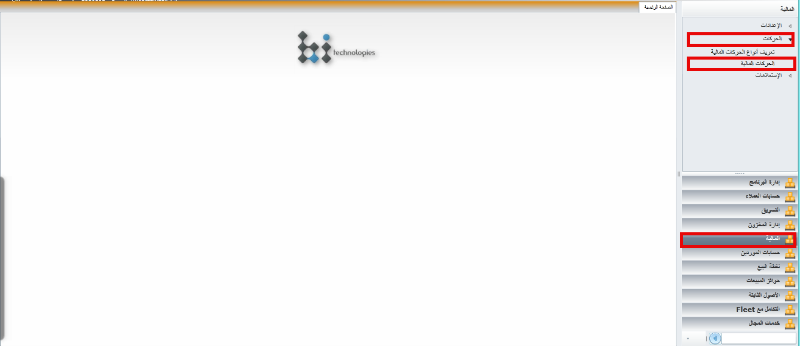
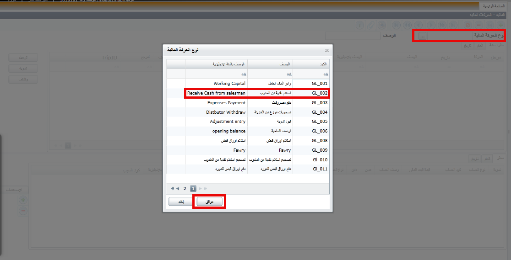
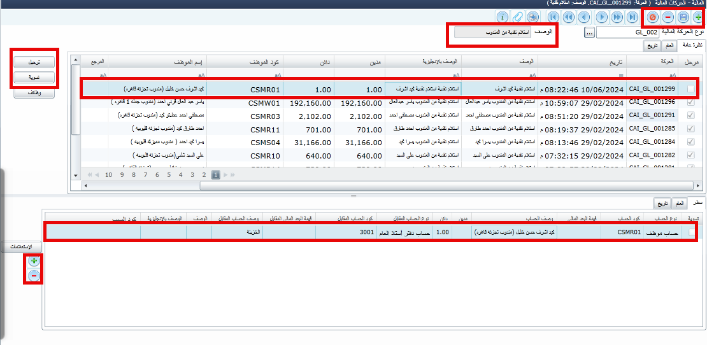
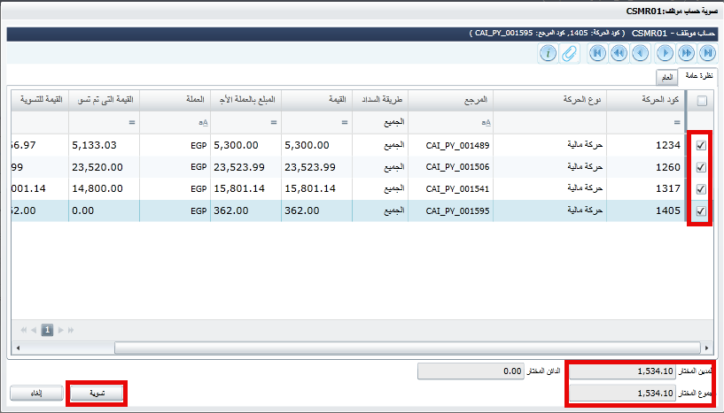
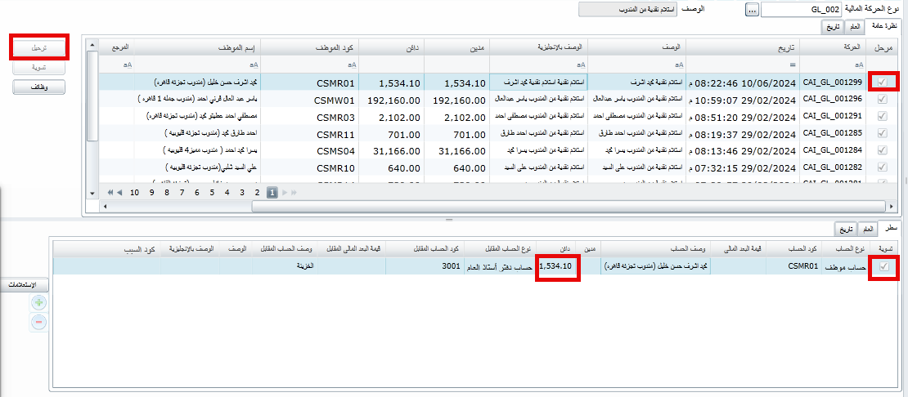

استلام نقدية من المندوب
الصفحه الرئيسية
العوده الى الخلف
الحالات التي يتم فيها اضافة نقدية الى عهدة المندوب
- ادخال فاتورة كاش الى حساب المندوب
- ادخال حركة يدوية او من هاند المندوب في قيد تحصيل لحساب المندوب
ولاستلام النقدية من عهدة المندوب
- من القائمة الرئيسية -المالية
- الحركات-الحركات المالية

- اختيار نوع الحركة

- استلام نقدية من المندوب ثم الضغط على موافق

- اضافة حركة جديد

- كتابة بيانات الحركة التاريخ-وصف الحركة-اسم الموظف
- يتم بالاسفل عمل حركة جديد
- يتم اختيار اسم الموظف مرة اخرى من من كود الحساب
- الحفظ ثم الضغط على تسوية

- تظهر شاشة يتم وضع علامة على القيم المراد استلام والتي تتطابق مع النقدية المستلمة فعليا من تقرير المندوب
- الضغط غلى تسوية

- يتم بعدها الضغط على حفظ
- ثم ترحيل
